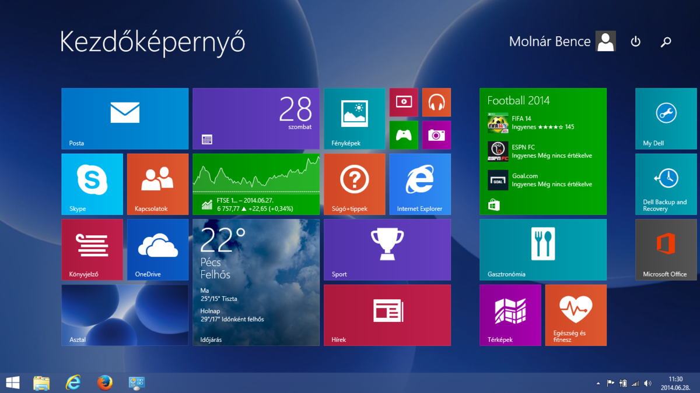
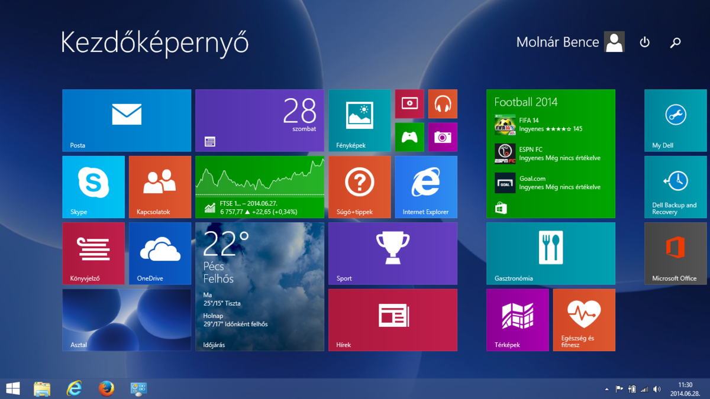
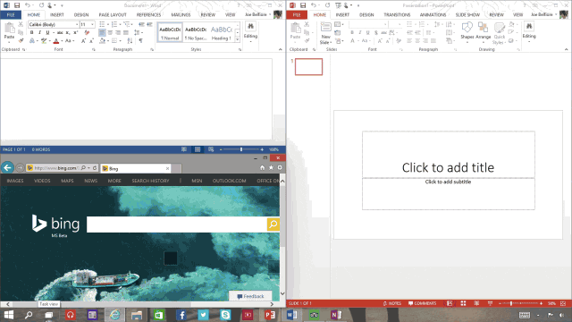
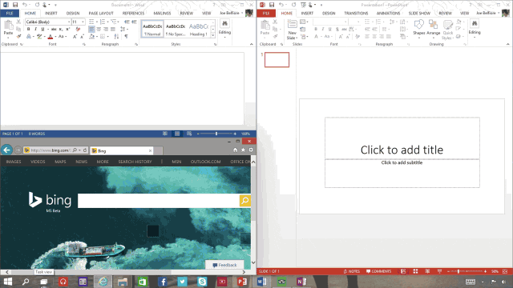

Windows 8 (2012)
Windows 8 introdujo cambios significativos en la interfaz, diseñados principalmente para dispositivos táctiles, pero resultaron confusos para muchos usuarios. Promovió el uso de aplicaciones a través de la Windows Store, aunque con resultados mixtos. A pesar de las quejas, se vendieron más de 60 millones de copias en enero de 2013.


Windows 8.1 (2013)
En 2013, Microsoft lanzó Windows 8.1, una actualización gratuita para abordar las quejas de los usuarios de Windows 8. Esta actualización reintrodujo el botón de Inicio y mejoró la interfaz de usuario, aplicaciones y usabilidad en general.
Fue bien recibido y se adaptó mejor a portátiles y ordenadores tradicionales que su predecesor. Además, redujo su tamaño, lo que lo hizo adecuado para dispositivos con especificaciones más bajas, como 1 GB de RAM y 16 GB de almacenamiento.

Windows 10 (2015)
En 2015, Windows 10 llegó como una actualización gratuita para usuarios de Windows 7 y 8. Con requisitos de sistema similares a Windows 7, Windows 10 devolvió el enfoque al escritorio, aunque mantuvo una opción de modo tableta.
Esta versión combinó un diseño moderno con opciones de inicio de sesión convenientes, como huella dactilar y reconocimiento facial. También simplificó las actualizaciones, manteniendo el sistema actualizado constantemente sin necesidad de lanzar nuevas versiones en los últimos cinco años.

